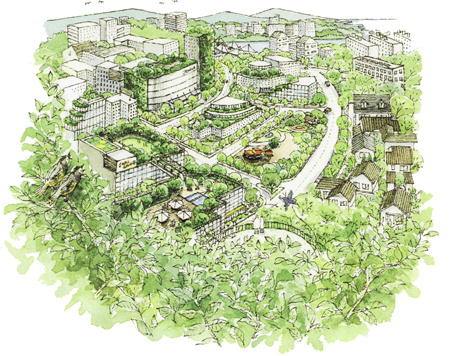

Corporate Philosophy
江戸の開府のために、徳川家康の命により全国から集められた職人衆。石勝エクステリアという風変わりな社名は、その職人衆の中でも際立った存在であった「石勝」にその起源があります。
1706年（宝永3年）に創業された「石勝」は、たび重なる江戸城の石普請に加わり、明治初年には青山警視庁墓地（現青山墓地）の開設に貢献しました。その後、大正にかけて多くの石造建造物の建造に、その業を揮ったことで知られています。今日でも、「青山・石勝ヲ刻ム」と印された記念碑や神社の石像美術品など、全国至るところで石勝が手がけた建造物に出会えます。これらの作品の数々は、「天下の石勝」と称される一級の技術を誇った石勝の歴史を雄弁に物語っています。
時代は変わって、その技は造園技術へと進化していきました。石勝エクステリアが伝統と技術の双方を社風に備えているわけは、こうした数世紀にまたがる文化を背景に持っているからにほかなりません。
私たちは、人間を含めたすべての生き物にとって重要な「緑」「水」「土」の自然資源を基盤とした造園こそ、経済と環境が調和する社会へ貢献できる職域であり、職能であると確信しています。「景観10年、風景100年、風土1000年」を造園の進化と考え、まず景観を整え、やがてその景観が風景として土地になじんでいく、そんな時の流れを願って造園事業に取り組んでいます。
